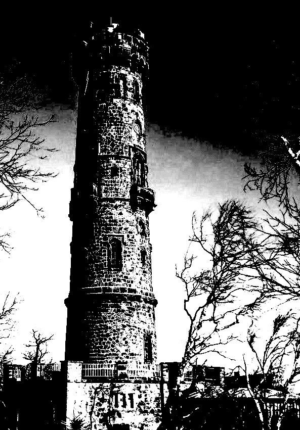
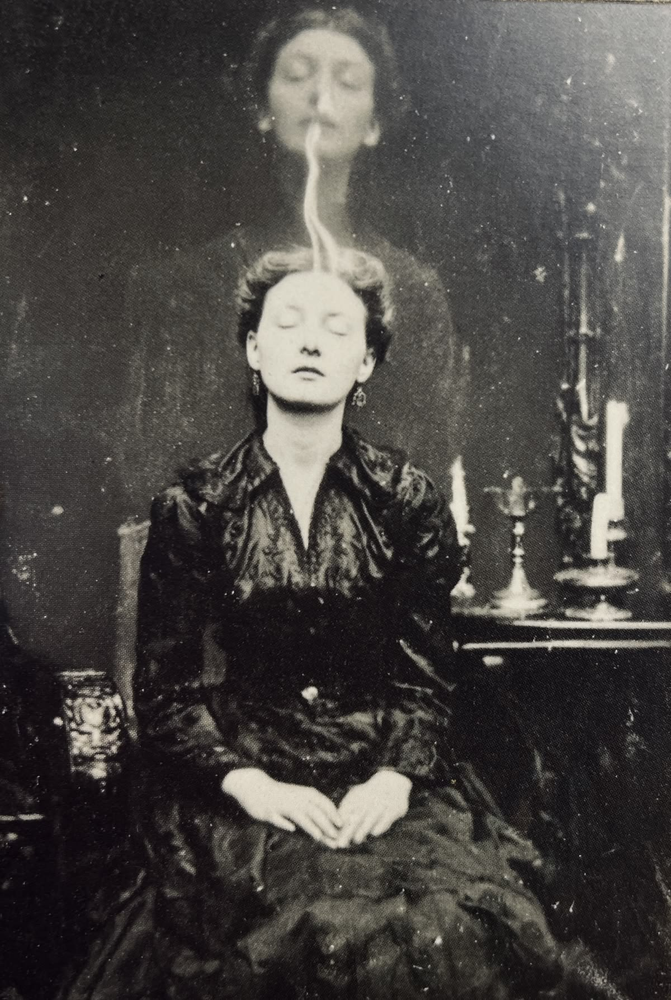
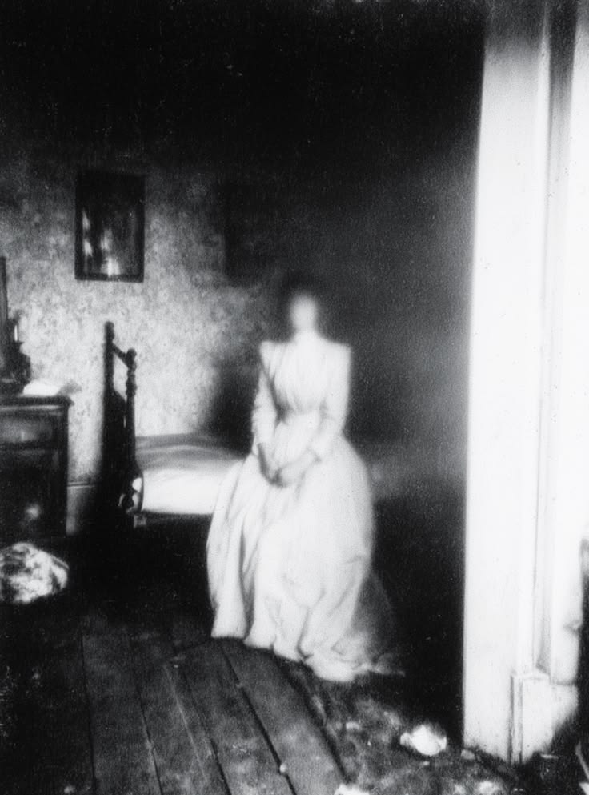
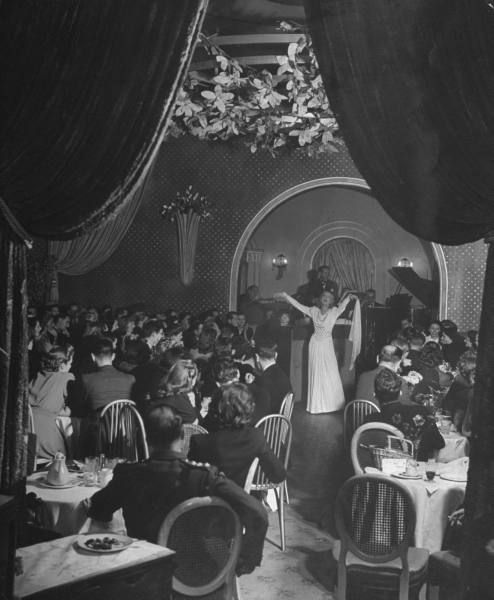
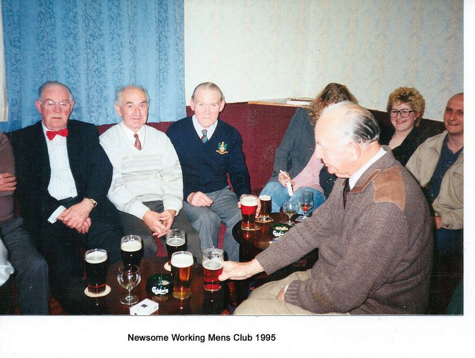
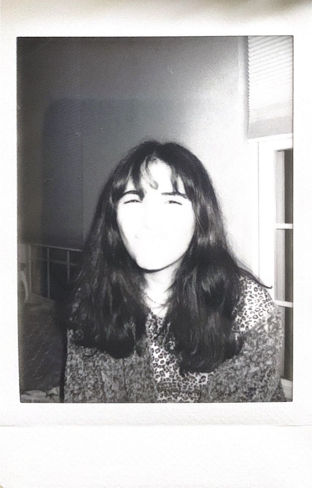

Known Background
The essential truth
Mourning Bluff Manor is haunted because a private fraternity called the Fellows of the Rook used the manor for experiments involving clairvoyance, death, and the possibility of perceiving future events. Their work centered upon the buried remains of an ancient structure known only as the Tower.
The Fellows did not build the Tower. No reliable record identifies who did or why it was constructed. Their experiments changed the manor by repeatedly using gifted people within its surviving foundation and conducting rituals intended to reach beyond ordinary time. Whatever intelligence now acts through Mourning Bluff Manor learned to perceive and manipulate possible futures through those experiments.
The modern Cast have been drawn to the manor because each possesses some degree of the same precognitive sensitivity.
Miriam Bellweather
Miriam Bellweather was the original owner of the manor and the principal financial patron of the Fellows.
Miriam inherited a textile and shipping fortune. After the deaths of her husband and children, she commissioned the manor in 1871 around an older structure already standing on the property. She later began dreaming that her children were alive in unfamiliar rooms. Those dreams drove many of the manor's additions: Miriam attempted to reproduce rooms she had seen only while asleep.
Dr. Lucius Ward persuaded Miriam that these dreams were not ordinary grief or spirit visitations. He claimed that she was perceiving unrealized futures in which her family had survived. Miriam funded his research, allowed the Fellows to meet at Mourning Bluff Manor, and authorized construction beneath and within the manor.
Years passed without restoring her family. Miriam became increasingly isolated and despondent. She dismissed much of the household, wandered the manor at night, spoke to her children through closed doors, and set places for them at meals.
During a winter storm in 1900, Miriam walked through the rear grounds and threw herself from the cliff behind the manor. Her body was never recovered.
After her death, witnesses reported seeing Miriam standing at the cliff and walking back toward the house, soaked and accompanied by two children. These accounts cannot all be verified, but manifestations resembling Miriam and the children remain part of the haunting.
Dr. Lucius Ward
Dr. Lucius Ward was a physician, psychical researcher, and First Fellow of the Rook.
Ward believed clairvoyance was a measurable faculty: a human sense capable of perceiving time rather than light or sound. His medical practice gave him access to people suffering prophetic dreams, visions, fugue states, and experiences dismissed as delusion.
Ward called these people Readers. Publicly, he described them as patients and research subjects. Privately, he increasingly treated them as instruments.
Ward's defining belief was:
A tragedy foreseen is a tragedy already survived.
He used the possibility of preventing disasters to justify confinement, coercion, psychic trauma, and eventually lethal experimentation. He knew more about the effects of the Tower than he disclosed to Miriam or many of the Fellows.
After Miriam's death, Ward gained control of Mourning Bluff Manor through disputed legal documents bearing her signature. Every witness to those documents was affiliated with the Fellows.
Acquiring the five objects named in the spellbook took real effort; Ward spent roughly six unaccounted-for weeks in 1903 traveling through Eastern Europe to track down a family of Romani smiths, "gypsies" in his own dismissive word, who held that a blade meant to draw blood must never be given a name, since naming it bound the smith's soul to whatever it later did. He acquired the spirit lamp the same way, through a defunct rival society's disgraced sitting. Locked: full provenance for the dagger and the lamp in decision-log.md; the dagger's documentary trace is a researcher's printout in Room 093, the Computer Room (669-gallows-hill-way.md).
The Fellows of the Rook
The Fellows of the Rook, usually called the Fellows, were a private fraternity of physicians, historians, spiritualists, academics, industrialists, and wealthy patrons.
Their emblem was a black rook perched upon a windowless tower. The rook represented watchfulness, intelligence, the fortified mind, and the ability to observe a distant field. Their records also use chess language when discussing people, rooms, and planned events.
The Fellows began as collectors of unusual accounts: prophetic dreams, warnings received before disasters, accurate memories of events that had not happened, and messages apparently written by the dead. Under Ward, they shifted from documentation to controlled experimentation.
Their highest officer was the First Fellow. Their meetings, archives, and laboratories within Mourning Bluff Manor were collectively called the Rookery, though no single room necessarily carried that name.
The Fellows were not united in motive. Some wanted to prevent suffering. Others sought political, financial, medical, or personal advantage. Several eventually opposed Ward's methods, but their opposition came after they had already enabled serious abuse.
The Tower
The Tower stood on the property before Mourning Bluff Manor. An antiquarian engraving shows an isolated cylindrical structure of dark masonry, already roofless and badly weathered. No surviving deed, survey, parish record, or local history identifies its builder, its age, or its intended purpose.
Most of the Tower was demolished when construction of the manor began in 1871. Its lowest circular courses were not removed. Miriam's builders incorporated them into the foundations, although no surviving plan accurately shows how they connect to the house above.
The buried interior is windowless and larger than the visible circumference should permit. Its walls are built from nearly black stone, its floor is packed earth, and sealed openings suggest stairs or passages that no longer exist. Iron sconces and later experimental fittings were added by the Fellows.
Local stories have called it a watchtower, an observatory, a prison, a religious structure, and a monument to a settlement absent from every map. None of these explanations is authoritative. No one knows who built the Tower or why.
The Fellows called the surviving buried chamber the Lower Circle. Ward believed the Tower distorted clairvoyant perception and allowed sufficiently sensitive minds to observe events beyond their own histories. The Fellows first attempted to document those impressions. Later experiments attempted to perceive and influence events that had not yet occurred.
The Lower Circle sits beneath a sealed iron floor-door in Room 100, the Spiral Stair Room, the only room still treated as true basement, reached by a stone-cut staircase and a circular stone antechamber with its own descending wall-stair. The door answers only to the working itself, once all five objects named in the spellbook are brought together there. It has exactly one known exception: a dark Major Arcana World card can force the seam open temporarily, a crack the house reaches through rather than the ritual actually completing. Resolved, session 1: this exception occurred in actual play, with only two of the five items gathered; the descent is confirmed open as of that session's end. (Full text, 669-gallows-hill-way.md, Room 100; decision noted in decision-log.md.)
What the Fellows awakened
There is an intelligence associated with the Tower and the changed manor. Its nature is not yet fully settled, but the following facts are true:
- It did not build Mourning Bluff Manor or found the Fellows.
- It could not initially perceive possible futures without a clairvoyant mind.
- The Fellows' repeated experiments gave it greater access to human memory, fear, and precognition.
- It can imitate people, rooms, voices, and remembered events.
- It manipulates possibilities rather than controlling events absolutely.
- It benefits when people remain uncertain about what happened and which future is real.
- It wants clairvoyant people inside Mourning Bluff Manor.
The names the Witness and the Distant Hand are working possibilities, not settled canon. Different Fellows and spirits may use different names without any one being correct.
Why the manor changes
Mourning Bluff Manor contains overlapping versions of rooms, events, and personal histories produced by the Fellows' experiments. The house does not remodel itself randomly. Its changes reflect:
- Possible outcomes that were perceived but never realized.
- Memories imposed upon physical rooms.
- Repeated experiments and deaths.
- The expectations and fears of clairvoyant visitors.
- Attempts by different spirits to reproduce, escape, prevent, or complete past events.
The spirits are therefore not a united force. Some manifestations want the Fellows' work completed. Some want it undone. Some repeat a version of events in which they survived. Others know that they died and want their deaths acknowledged.
The night everything failed
Ward and four other Fellows conducted the final, large-scale experiment in the Lower Circle: five Readers connected through a working meant to hold every possible future at once, so that no one who ever entered Mourning Bluff Manor again would suffer a tragedy they hadn't already foreseen and survived.
Partway through, one of the other four Fellows realized the working was not producing foresight at all. Something already old and hostile, sealed within or beneath the Tower long before the Fellows ever arrived, was using the ritual as a way through into the world. That Fellow broke the circle deliberately, to stop it.
Breaking the circle did not stop the ritual and did not complete it. It froze the working at the exact moment of interruption, but not evenly. Ward and the three other Fellows besides Edmund were caught inside that moment and have been reliving it ever since, forever finishing, forever being stopped, landing on neither. A century of repetition has worn them thin: they now appear gaunt, half-transparent, more afterimage than person, running the ritual's motions over and over. Edmund, the one who physically broke the circle, did not get caught in the loop with them. He died then, for real, the instant he wiped his hand through the chalk pentagram to break it. What remains of him is a skeleton, still positioned at the edge of the circle where he fell, the smeared chalk line still visible beneath him. The other four loop around him endlessly and do not, or cannot, acknowledge the body in the room with them.
The house's instability, its overlapping rooms, its repeated and contradictory events, radiates outward from that one frozen, unevenly shared instant, over and over, a century deep.
The intelligence associated with the Tower did not fully get through. It has had a century to keep trying. It still needs clairvoyant minds to finish what the original ritual almost let in.
The intelligence itself does not experience time the way a person does. It perceives past, present, and future at once, which is why it can answer a question before it is asked (see the spirit lamp's history, Room 076/097 in 669-gallows-hill-way.md) and why Edmund could no longer convince himself the ritual was producing foresight at all rather than something older wearing the shape of an answer. It wants what it has always wanted: a clairvoyant mind, or several, to occupy permanently, since it has no fixed position in time of its own and cannot otherwise hold a lasting place in the world. The Fellows never recorded what they believed its true name to be, if it has one. Ward's own papers refer to it only by an epithet, the Unasked Question.
The Fellow who broke the circle was Edmund (see his recorded doubts in Ward's diary, Room 097, 669-gallows-hill-way.md).
The missing mirrors
Every mirror the Fellows could locate was deliberately removed from Mourning Bluff Manor, not merely covered. Publicly, this is remembered, when it's remembered at all, as an old mourning custom taken too far: covering (and eventually removing) mirrors after a death so the departed soul cannot be trapped in the glass.
The real reason is that the Fellows discovered, likely too late, that the intelligence associated with the Tower could see through reflective surfaces and use them to imitate people, rooms, and remembered events with unusual precision. Removing every mirror in the house was an attempt to blind it, or at least to deny it an easy vantage. The attempt was incomplete: it did not banish the intelligence, and other reflective surfaces (polished brass, still water, dark glass) still carry traces of the same effect throughout the house.
Exactly one true mirror remains, deliberately kept back rather than destroyed, because the Fellows' ritual required one. It waits, easy to overlook, in plain sight on the vanity in Room 006, the one vanity whose own built-in mirror was removed along with all the others.
What is publicly believed
The public history of Mourning Bluff Manor is incomplete and sanitized:
- Miriam Bellweather built the manor after inheriting her fortune.
- She became reclusive following several family deaths.
- She died by suicide in 1900; her body was not recovered.
- The manor passed through disputed ownership and was eventually abandoned.
- Fires, accidents, disappearances, and trespassing deaths are attributed to structural danger and local exaggeration.
- The Fellows of the Rook are absent from most ordinary histories of the property.
What evidence can establish
Players should be able to discover, through multiple independent clues, that:
- The Fellows operated within Mourning Bluff Manor.
- Miriam financed them because Ward promised access to a future in which her family lived.
- Readers were confined and harmed inside the manor.
- The buried foundation of the Tower was the center of the experiments.
- Miriam turned against or lost faith in Ward before her death.
- Ward acquired the manor under suspicious circumstances.
- A final experiment caused the central haunting.
- The modern Cast were drawn together intentionally, not by coincidence.
Unresolved canon
The following remain genuinely open:
- What happened to Miriam's husband and children?
- Did Miriam jump willingly, under supernatural influence, or because the Fellows forced her toward it?
- What was removed from Miriam's final will?
Deliberately left open, not a gap: why the Cast has been gathered this particular night, and what concrete objective brings them into the manor. Per rules/gm-guide.md's own framing, this is meant to be established per table, not fixed as a single canonical answer.
Deliberately unresolved by design: why the anonymous sender gave the Historical Archaeologist the box (cast/historical-archaeologist.md). This stays a permanent mystery, not something to solve later.
Resolved this session: what happened during the final experiment, why the intelligence still needs Readers, and Ward's present state (see "The night everything failed," above). The present state of the other three looped Fellows and Edmund's fate (see above). The intelligence's nature and want (see "The night everything failed," above; the Fellows' epithet for it was the Unasked Question). What must be accomplished to escape (see the three endings, decision-log.md). The Inheritor is confirmed as the default/presumed Organizer, tied to their existing "who did you personally ask to come" prompt (GM-only note, decision-log.md; no change made to cast/inheritor.md or cast/cast-index.md).
Timeline
This chronology contains settled dates and explicit gaps. Do not invent exact dates inside clues until they are added here.
Before the manor
- The Tower and its underground masonry predate Mourning Bluff Manor and every reliable record of the property. No one knows who built it or why.
- Circa 1869: A local antiquarian publishes an engraving of the isolated structure then standing on the property. Most of the Tower is demolished when construction of the manor begins, but its circular foundation and buried interior are incorporated into the new house.

The surviving reproduction is usually captioned only “The Old Tower.” Its doorway and lower masonry do not agree with any known exterior wall of the completed manor. The engraving is the earliest confirmed image of the structure.
Nineteenth century
- 1871: Miriam Bellweather commissions the manor around an older structure on the property.
- Date unresolved: Miriam's husband and children die.
- Date unresolved: Miriam begins dreaming of her children in rooms not yet present in the manor.
- Date unresolved: Miriam meets Dr. Lucius Ward.
- 1886: Ward becomes First Fellow of the Rook.
- Circa 1892: Under Ward's direction, Miriam participates in photographic experiments intended to capture spirits, memories, or images arriving from unrealized futures. One formal exposure shows a second likeness rising above her. Another plate from the same series appears to show a woman seated in a bedroom that had not yet been built when the plate was catalogued.


The Fellows disagreed over whether these were spirit photographs, double exposures, psychic projections, or images from another history. Ward treated them as evidence that Miriam could transmit visual information across possible futures.
- Late nineteenth century: Miriam funds repeated additions to Mourning Bluff Manor and permits the Fellows to establish the Rookery and Lower Circle.
- Late nineteenth century: The Fellows progress from collecting psychic testimony to coercive experimentation upon Readers.
Twentieth century
- 1900: Miriam Bellweather throws herself from the cliff behind Mourning Bluff Manor during a winter storm. Her body is never recovered.
- After 1900: Ward gains control of the manor through disputed documents allegedly signed by Miriam.
- 6 November 1903: The Fellows conduct their final large-scale experiment in the Lower Circle, seventeen years after Ward became First Fellow. One of the five Readers present, Edmund, broke the circle mid-ritual after losing faith that it was producing foresight at all. This froze the working rather than ending it; Ward's diary entries leading up to that night are in Room 097 (
669-gallows-hill-way.md). - 1926, disputed: A wedding photograph is catalogued as the marriage of Miriam's daughter, who would have been an adult by this date. Public records say that Miriam's children died decades earlier. The bride is not clearly visible, but the ballroom and several guests recur in other Bellweather and Fellows photographs. The photograph may record an unrealized history rather than an event that occurred in the accepted timeline.

- 1988: A small team of scientists and psychical researchers receives temporary access to Mourning Bluff Manor. Their stated purpose is measurement and observation, but their own surviving notes make clear the actual goal is larger: to learn how to harness whatever the house generates, not merely record it. They install environmental sensors, conduct sleep and perception trials, and attempt to reproduce parts of the Fellows' work without acknowledging how much of it they understand. Much of their effort goes toward locating a spiral staircase mentioned only obliquely in older estate records, said to end at a sealed iron door that no prior account describes ever opening. The house does not cooperate. The staircase, when it can be found at all, is rarely in the same place twice, and more than one team member insists a hallway that led there yesterday leads somewhere else entirely today. Their surviving group photograph shows an informal gathering shortly before the investigation deteriorates.

The surviving copy was reprinted or remounted in 1995 beneath an unrelated social-club caption. Whether this was an archival mistake or a deliberate attempt to misidentify the researchers is unknown.
- 1989: The investigation ends badly. Two team members go missing in separate parts of the house within the same week and are never recovered. A third is found dead in a locked upper-floor room, having apparently starved within arm's reach of untouched provisions, though the coroner cannot reconcile this with witnesses who insist they saw him alive only four days earlier. A Polaroid taken during the investigation shows a young researcher whose face has been completely erased by overexposure, although the wall, clothing, and hair remain legible; her name is missing from the team's surviving notes, and at least one surviving colleague later insists, calmly and repeatedly, that she never existed at all. The team reaches the staircase and its door exactly once, late in the project, and records its position carefully before losing the room again within the hour. Every later attempt to return, following their own directions to the letter, leads somewhere else. Within weeks the project ends. Its surviving members stop discussing the house publicly, and at least two of them later deny, on the record, that the expedition ever took place.

- Later years unresolved: The property is abandoned again, intermittently entered, and connected to further disappearances and accidents.
Present day
- The player-chosen Organizer (see
cast/cast-index.md) gathers the Cast at Mourning Bluff Manor. There is no fixed archetype for this role; the Paranormal Investigator referenced here previously was a discarded pre-Cast archetype and is not one of the ten current characters. - The reason, advertised objective, and immediate inciting evidence remain unresolved.